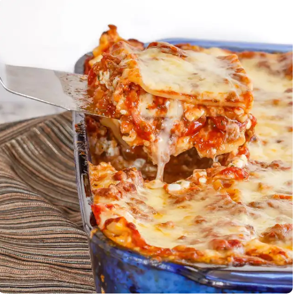

How to make some good eatin lasagna

Description
Here is a description about lasagna! TLDR: It's great!
Ingredients
- 1 pound ground beef
- 3 cloves garlic minced
- 1 cup button mushrooms chopped 3-4 medium
- The rest of the ingredients can be found on here
- In a large saucepan, over medium heat, brown the ground beef. Drain off the fat, and then add the garlic, mushrooms, onion and basil to the pan.
- Cook, stirring, for 2-3 minutes until the onions are softened slightly.
- Add the tomatoes and tomator paste and stir to combine.
- Lower the heat and simmer, uncovered for 30 minutes, stirring occasionally.
- In a large pot, boil the lasagna noodles until al dente, about 10 minutes and drain
- In a large bowl, combine the cottage cheese, parmesan cheese, parsely, pepper and beaten eggs.
- In a 9x13 inch baking pan, layer the lasagna. Place half the noodles in the pan and spread with half the cottage cheese mixture. Next spread one third of the mozzarella cheese and then half the meat sauce. Repeat these layers and then top with the remaining third of the mozzarella cheese.
- Bake at 375 degrees F for 30 minutes, or until the cheese has started to brown and the filling is hot and bubbling.
- Let it stand for at least 10 minutes to set up before cutting into squares and serving.